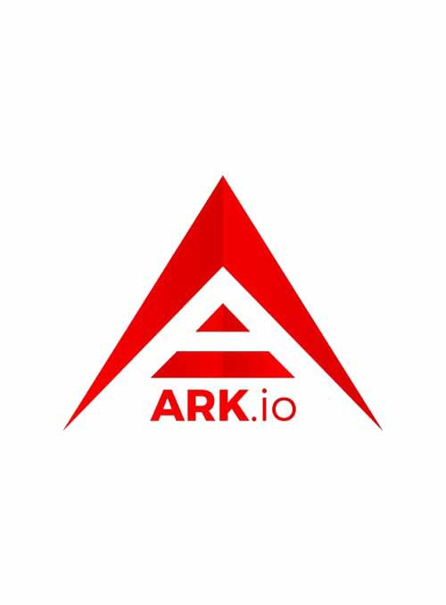

Aerum
2
Aeternity
271
60
Ardor
113
60
Ark
Ark
Ark Ecosystem is a legal entity developing an open-source, public, blockchain-based distributed computing platform featuring smart bridges functionality. Ark Ecosystem is the first blockchain project to incorporate in the EU and in France. It is registered as Société Coopérative d’Intérêt Collectif (SCIC) which is “Cooperative Society of Collective Interest” or “General Interest Cooperatives”. This structure is aligned with an open source venture and with a for-profit venture. The French regulatory body of financial markets – AMF Autorité des Marchés Financiérs – and the National bank of France – Bank of France – have been in close collaboration with ARK Ecosystem and their legal advisory firm – Fieldfisher to design the SCIC structure. The lead partner that designed the SCIC structure is Arnaud Grunthaler. He is also a member of the think tank of the French Prime Minister’s Cabinet focused on policy “France Stratégie”.
Consensus: DPoS,https://tokens-economy.gitbook.io/consensus/chain-based-proof-of-stake/delegated-proof-of-stake-dpos
Block Time: 0.133 seconds
Market Cap: $ 75 million
WhitePaper
Ark
75
0.133